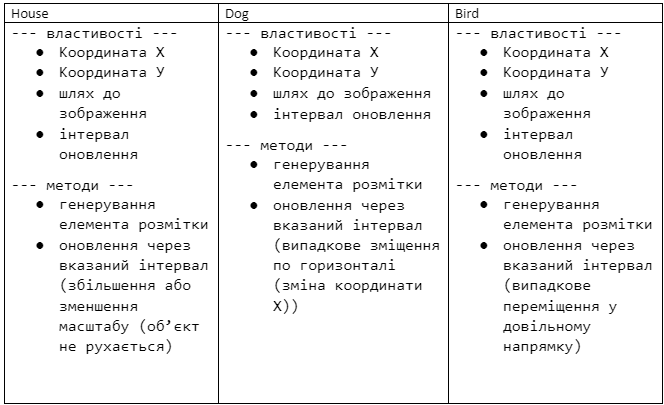

Створити клас Client
На основі цього класу створити клас GoldenClient
Створити клас Bank, у якому зберігається масив клієнтів. Виконати такі операції
Вивести
всіх простих клієнтів; Вивести всіх клієнтів GoldenClient; Знайти сумарну кількість грошей
на рахунку;
Розробити Класи
Користувач задає місяць навчання учня (перевіряти чи є числом, чи від 1 до 12, чи не канікули) та оцінку (перевіряти чи є числом, чи від 1 до 100). Вивести чи зможе він виправити оцінку (якщо оцінка погана і це не останній місяць у семестрі) . Обробку усіх помилок зробити з використанням відповідних класів.